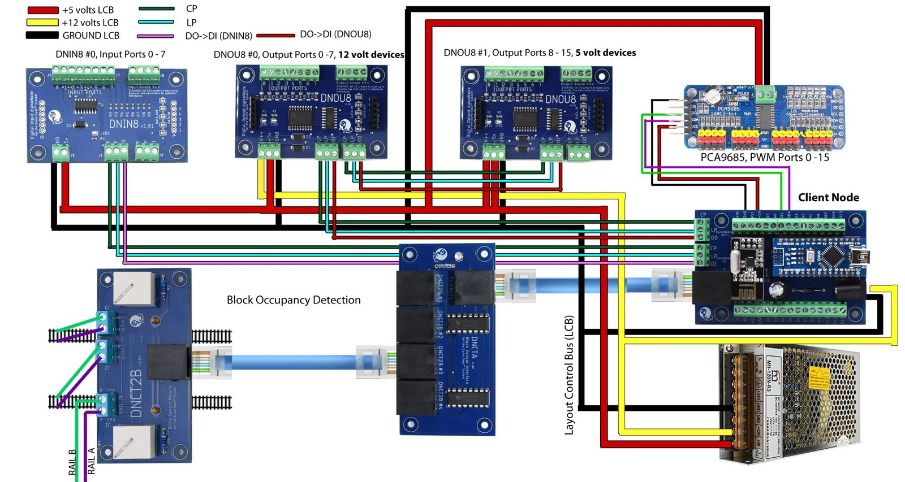

Radio nodes under the layout
HART's field wiring uses LCOS, a wireless layout control system from Beagle Bay. Instead of running long cables back to one big panel, small client nodes sit in cabinets next to the switches and signals they look after, and talk to each other by radio. There are about a dozen of them around the room.

What a node does
- Switches. Slow-motion switch motors run off the 12-volt outputs, and the node reports which way each switch is lined.
- Detection. Block detectors sense when a train is in a section of track and report it as occupied.
- Signals. Each searchlight head takes three outputs in a row: red, yellow, green. The output boards sit next to the masts so the wires stay short.
The wiring viewer shows every node pin by pin.
The bridge
The computer running JMRI has no radio of its own. The bridge is one more Arduino Nano with the same radio, plugged into a PC by USB. It joins the LCOS network as a node and hears what the others say. A small Python program on the PC passes each message on to MQTT, a lightweight message service that JMRI is also connected to.
- Nodes on the layout
- Radio
- Arduino Nano
- USB to the PC
- MQTT
- JMRI
Messages go both ways. From the layout come switch positions, occupied blocks, and what each signal is showing. To the layout go commands to throw a switch or set a signal to red, yellow or green. Every device has a number built from its node and its place on that node, so the first signal on node 4 is 432.
Keeping the link alive
The PC checks in with the Nano every few seconds. If the radio link drops, the bridge signs back up with the nodes on its own, and a lamp on the dispatcher's panel shows whether LCOS is connected.
Open source
The bridge firmware and the PC program aren't specific to HART. They work on any LCOS layout with a JMRI MQTT connection, and the code is on GitHub: LCOS_ESP32_MQTT_Client.
More: How the signals work · Wiring viewer · Device roster · Wiring diagrams